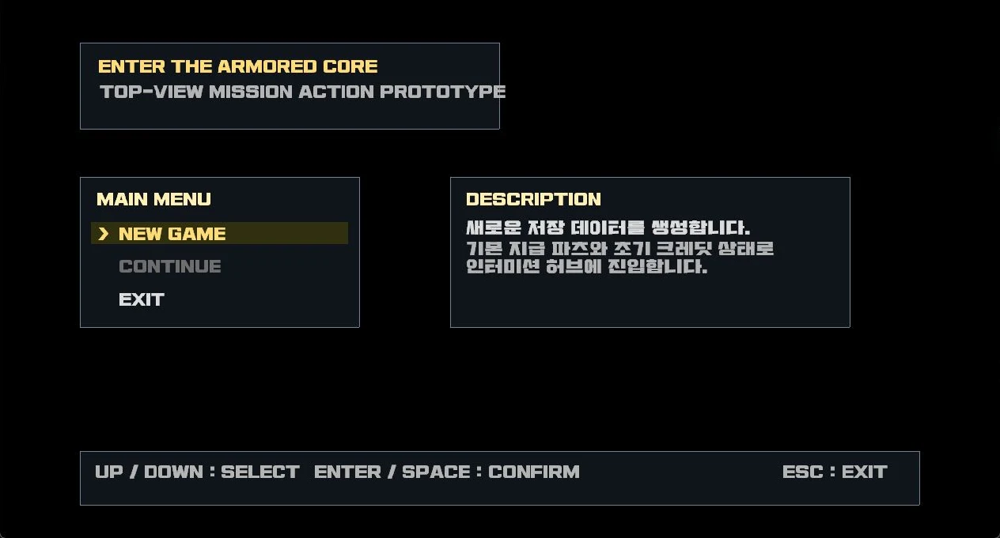
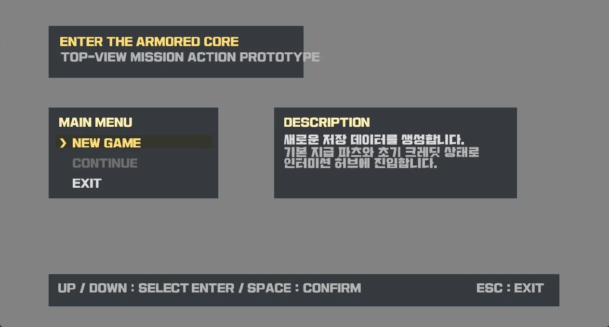
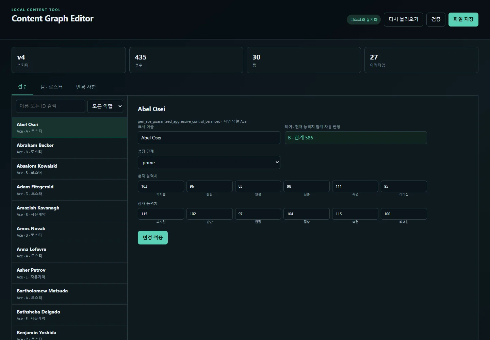
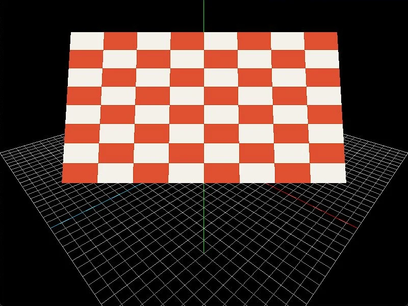
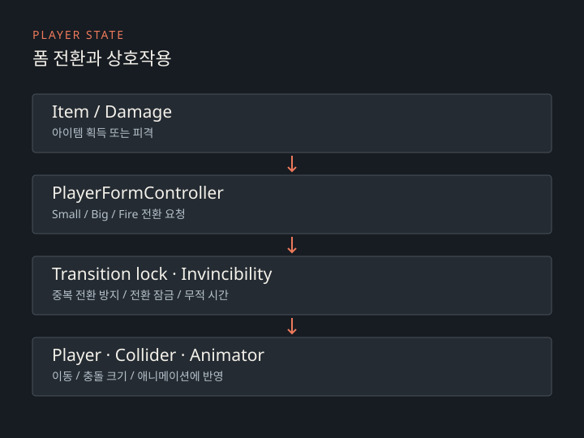

Game client주력
Unity · C#
전투, AI, UI와 네트워크 클라이언트 구현
Gameplay · Engine · Server · Tooling
플레이부터
제작 도구까지.
Unity 게임 클라이언트부터 Rust 서버, C++ 렌더링과 콘텐츠 편집 도구까지 직접 설계하고 구현합니다.
BUILD RANGE01 — 04
- 01GameplayUnity · C# · 전투와 UI
- 02NetworkRust · Tokio · 서버 권위
- 03GraphicsC++ · DirectX · 렌더링
- 04Content toolsSpring Boot · 데이터 편집
01
소개
DEVELOPERM87.게임 · 시스템 · 도구
게임의 전투와 규칙, 이를 뒷받침하는 서버와 도구를 만듭니다.
Unity로 전투와 UI를 만들고, Rust로 서버와 리그 시뮬레이션을 개발합니다. C++에서는 렌더링과 충돌 처리를 다루고 있습니다. 게임 기능뿐 아니라 콘텐츠를 편집하는 도구까지 작업합니다.
사용 기술
프로젝트에 사용한 언어와 도구Server · Simulation주력
Rust · Tokio · Rayon · Serde
서버 권위 전투와 장기 리그 시뮬레이션 구현
Systems · Graphics주력
C++ · Win32 · DirectX · HLSL
D3D9·D3D11 렌더 백엔드와 게임 프레임워크 구현
Content tools · Data활용
Spring Boot · Java · Thymeleaf · JSON
Unity 콘텐츠 편집 도구 개발
Graphics API lab경험
Vulkan · Ash · Winit
스왑체인과 파이프라인을 구성한 렌더링 실험
- 주력
- 대표 프로젝트의 핵심 구조를 설계·구현
- 활용
- 독립 도구 또는 기능을 완성
- 경험
- 작은 완성작이나 기술 실험에 적용
02
대표 프로젝트
전투 RPG, DirectX 액션 게임, 리그 시뮬레이션을 만들었습니다.

Unity Client + Rust Server
프로젝트 X
Unity 클라이언트와 Rust 서버로 만든 전투 RPG입니다. 로컬 전투와 서버가 판정하는 네트워크 전투를 함께 다룹니다.
전투 결과를 계산하는 코드와 상태를 바꾸는 코드를 분리했습니다. 네트워크 전투에서는 클라이언트가 행동을 요청하고 서버가 결과를 결정합니다. 수신 메시지는 큐에 모아 Unity 메인 스레드에서 반영합니다.
- 전투
- 명시적 세션 · 공통 판정 · Mutation 적용
- AI
- 로드아웃 기반 역할·거리·아츠 선택
- 네트워크
- 명령 · Delta · Event · Correction 분리
- 복귀
- 진입 시점 저장 · 결과 반영 · 연결 종료 시 복원


DX11DX9메뉴 · 왼쪽 DX11 / 오른쪽 DX9
같은 미션의 DX9·DX11 화면입니다. 별도로 촬영해 캐릭터 위치와 동작 시점에는 차이가 있습니다.
C++ Game Framework
엔터 더 AC
C++로 만든 2D 액션 게임입니다. 같은 게임 코드를 Direct3D 9와 Direct3D 11에서 실행할 수 있습니다.
게임은 공통 렌더 명령을 보내고 각 백엔드가 화면을 그립니다. 충돌 판정, 무기와 조준 시스템, 레이더, 웨이브와 미션을 구현했으며 파츠와 미션 데이터는 JSON으로 불러옵니다.
- 렌더링
- D3D9 / D3D11 이중 백엔드
- 게임플레이
- 충돌 · 전투 · 미션 · 데이터 로딩
- 게임 루프
- 60Hz 고정 틱 · 렌더 주기 분리


Rust Simulation + Unity/C# Port + Spring Boot Tool
RustTeamSim
30개 팀이 3개 티어에서 경쟁하는 리그 시뮬레이션입니다. Rust로 시작해 Unity/C#으로 옮기고, 선수와 팀 데이터를 편집하는 웹 도구를 만들었습니다.
경기 결과에 따라 팀이 승강하고, 해마다 선수가 성장·은퇴·재분배됩니다. Spring Boot 편집 도구에서는 선수 능력치와 성장 단계를 수정하고 팀별 선발·벤치를 배정할 수 있습니다.
- 도메인
- 리그 · 매치 · 선수 생명주기
- 분석
- 경기·시즌 통계 · 병렬 시뮬레이션
- 편집
- 선수 435명 · 팀 30개 · 로스터 구성
- 저장
- 잘못된 참조·중복 배정 차단 · 외부 파일 변경 감지
- 협업
- JSON 구조를 몰라도 브라우저에서 콘텐츠 조정
LAB
작은 완성작과 실험
렌더링 실험과 작은 게임 프로젝트입니다.

Graphics Experiment
RustVulkanSpinCube
Ash와 Winit으로 스왑체인, 파이프라인, 프레임과 메시 구조를 직접 구성한 Vulkan 렌더링 실험입니다.
GitHub에서 보기 ↗
Solo Game Project
2D Platformer
이동과 폼 전환, 블록·아이템·적 상호작용, 파이어볼, HUD와 사운드까지 직접 연결한 횡스크롤 플랫포머입니다.
폼 전환 구현 살펴보기
Small·Big·Fire 상태를 구분하고 전환 중에는 중복 요청을 차단합니다. 전환 잠금과 무적 시간을 분리하며, 씬이 다시 로드되면 정적 상태를 초기화합니다.
Have a project in mind?